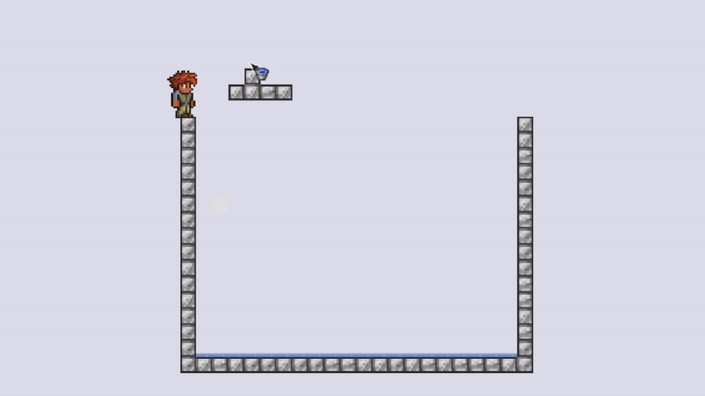
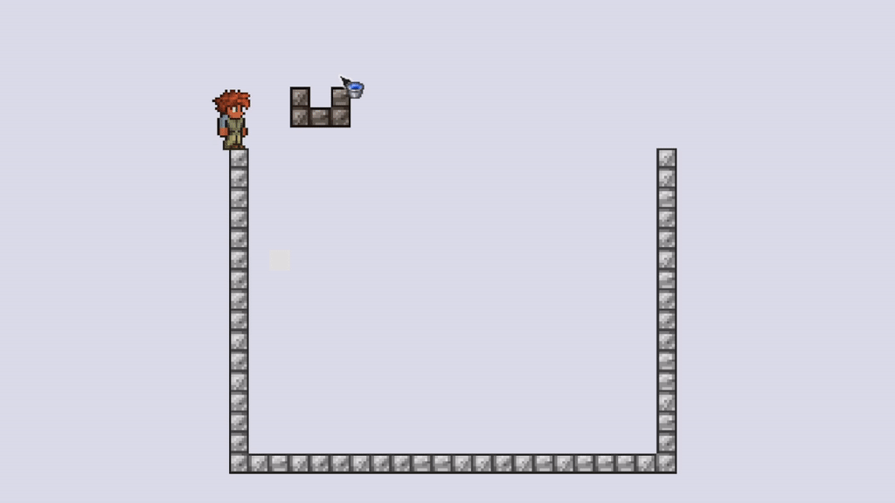
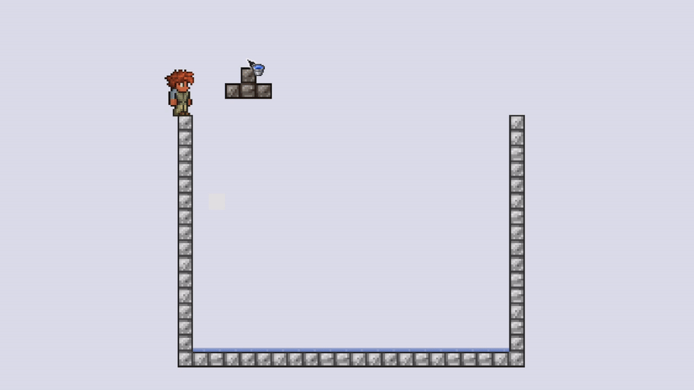
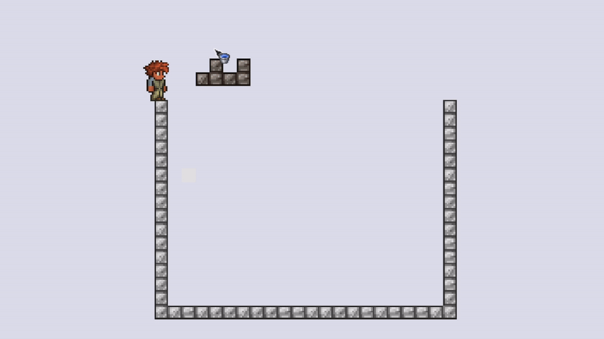
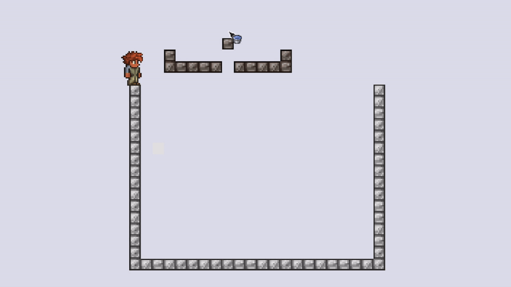
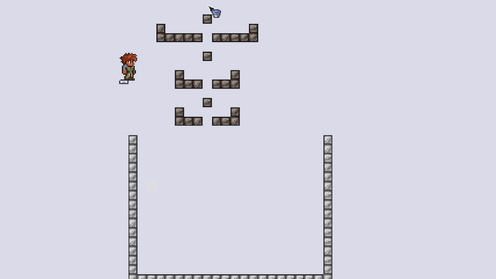
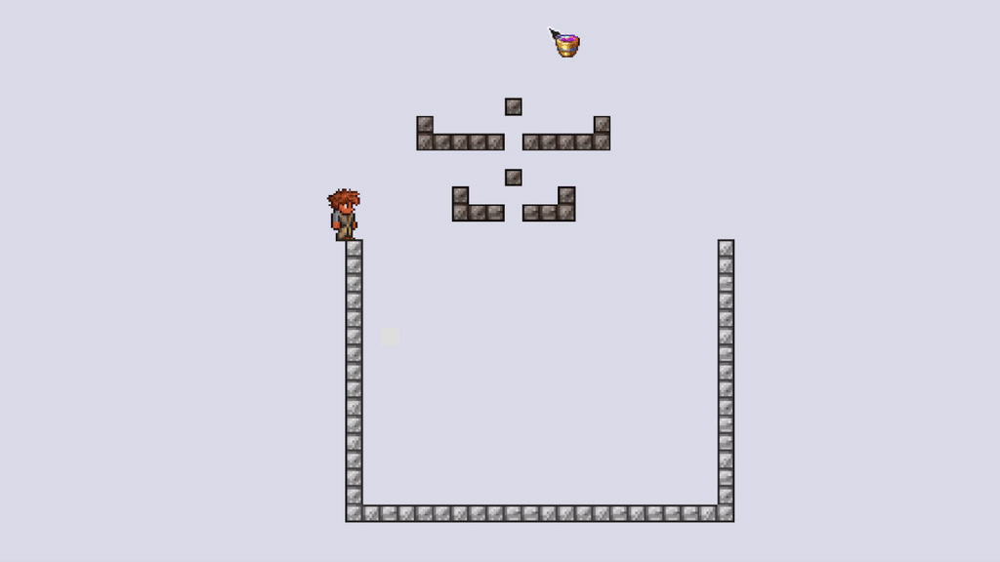
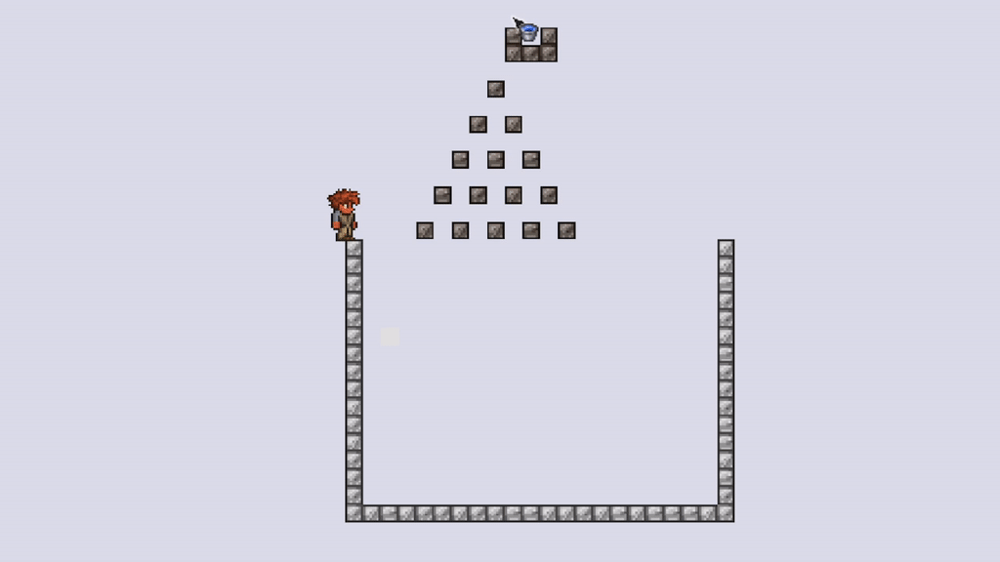
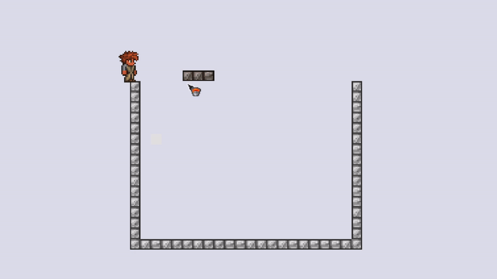
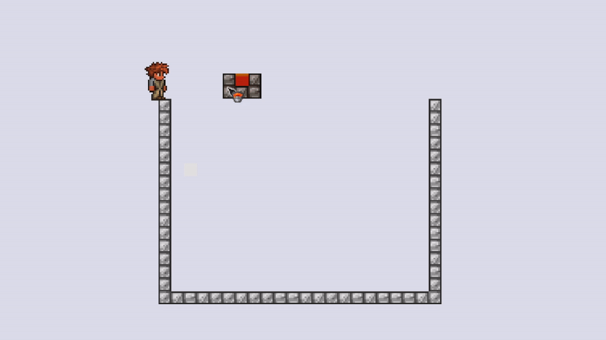

Liquid Duplication

| Status | Works |
|---|---|
| Platform | Any |
| Tags |
Liquid dupe is a well known and easy to do trick. Buckets always produce a full "block" of liquid. However, it is possible to fill an empty bucket with much less liquid. By allowing the liquid to spread across multiple tiles in a specific way and then using an empty bucket on just one tile, you can effectively add liquid to the world while still keeping your bucket full.
Note that duplication with pipes and structures such as "Snaker" were fixed in 1.4 and are no longer usable.
Water
There are 5 different known ways to dupe water. I have timed how long it would take to fill up a 15 by 20 (300 blocks) pool to compare them. These measurements should not be considered 100% accurate as liquids in Terraria are quite inconsistent. However, they do show how the tested methods compare to each other. For reference, filling it with normal water buckets takes 50 seconds.
Method 1 (fastest): ~190 seconds
Method 2 (most commonly used): ~243 seconds
Method 3: ~247 seconds
Method 4: ~472 seconds (never use this)
Method 5 (AFK water dupe): random and really slow. Extremely inconsistent, randomly stops from time to time and needs to be "renewed". It seems that adding smaller "recombiners" below it makes it more reliable. However, it does sometimes require multiple water buckets to even start the flow.
 This method is also the only one that works with shimmer. Unfortunately, lava and honey do not work with it.
There is a way to make this more consistent and fully AFK with some wiring. See AFK Water&Shimmer Duper
Keep in mind that designs such as the one below do not speed the process up, even if it may appear so.
Lava and Honey
Because these liquids flow much slower, examples shown above will not work for them. Instead, place 3 blocks in a row, pour honey or lava on any edge, let it spread and then keep using the bucket on the other edge.

While it possible to use a similar technique to Method 2, it is much slower and requires the player to time the clicks.
